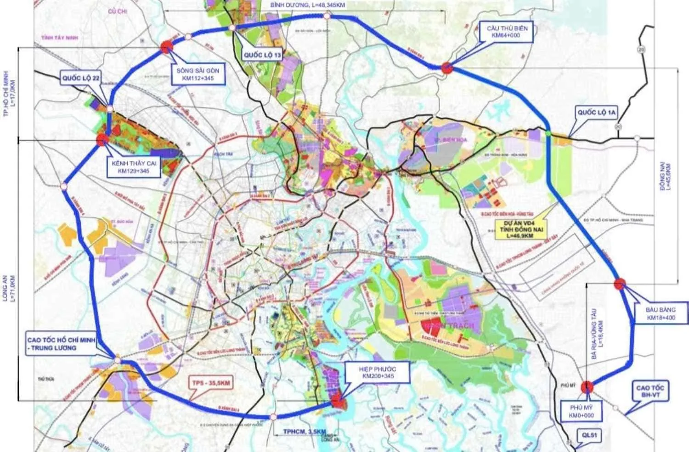

Dự án Vành đai 4 TP.HCM đang được các cơ quan chức năng đẩy nhanh tiến độ chuẩn bị nhằm sớm triển khai xây dựng trong năm 2026. Đây được xem là một trong những công trình hạ tầng giao thông trọng điểm của khu vực Đông Nam Bộ, góp phần tăng cường liên kết vùng và tạo động lực phát triển kinh tế - xã hội trong những năm tới.
Theo kế hoạch dự kiến, đoạn tuyến Vành đai 4 dài hơn 159 km đi qua TP.HCM, Đồng Nai và Tây Ninh sẽ được triển khai với tổng mức đầu tư hơn 120.400 tỷ đồng. Công trình được chia thành nhiều dự án thành phần, bao gồm công tác giải phóng mặt bằng, xây dựng đường gom dân sinh và tuyến cao tốc chính theo hình thức đối tác công tư (BOT).
Các địa phương liên quan đang phối hợp thực hiện công tác chuẩn bị đầu tư, trong đó mục tiêu là hoàn thành phần lớn công tác giải phóng mặt bằng trong năm 2026 để đảm bảo điều kiện khởi công dự án. Nếu tiến độ được triển khai thuận lợi, toàn tuyến có thể hoàn thành và đưa vào khai thác trong năm 2028.
Đáng chú ý, sau quá trình điều chỉnh địa giới hành chính, chiều dài tuyến Vành đai 4 đi qua TP.HCM đã tăng đáng kể, trở thành đoạn dài nhất trên toàn tuyến. Điều này giúp mở rộng khả năng kết nối giao thông giữa trung tâm kinh tế lớn nhất cả nước với các khu vực công nghiệp, logistics và đô thị vệ tinh lân cận.
Trong giai đoạn đầu, tuyến đường được đầu tư với quy mô 4 làn xe cao tốc. Tuy nhiên, quỹ đất sẽ được giải phóng theo quy mô hoàn chỉnh cho 8 làn xe nhằm đáp ứng nhu cầu mở rộng trong tương lai khi lưu lượng giao thông gia tăng.
Theo đánh giá của Trí Đức Realty, Vành đai 4 không chỉ có ý nghĩa về mặt giao thông mà còn tạo ra tác động tích cực đối với thị trường bất động sản khu vực. Những địa phương nằm dọc tuyến đường hoặc gần các nút giao quan trọng được kỳ vọng sẽ hưởng lợi từ khả năng kết nối thuận tiện hơn, thu hút đầu tư sản xuất, thương mại và dịch vụ.
Bên cạnh Vành đai 4, hệ thống giao thông vành đai của TP.HCM còn bao gồm Vành đai 3 đang trong quá trình thi công và Vành đai 2 tiếp tục được hoàn thiện trong thời gian tới. Khi các tuyến đường này đồng bộ đi vào hoạt động, mạng lưới giao thông liên vùng sẽ được nâng cấp đáng kể, góp phần thúc đẩy tăng trưởng kinh tế và nâng cao giá trị bất động sản tại nhiều khu vực cửa ngõ của thành phố.
Nhà đầu tư và người mua bất động sản nên theo dõi sát tiến độ triển khai các dự án hạ tầng trọng điểm để có kế hoạch đầu tư phù hợp, đặc biệt tại những khu vực được hưởng lợi trực tiếp từ hệ thống giao thông kết nối mới.
Liên quan
- Khởi công Vành đai 4 qua Bình Dương
- Quốc hội chốt xây dựng Vành đai 4 TP HCM, cao tốc Quy Nhơn - Pleiku
Nguồn: VnExpress